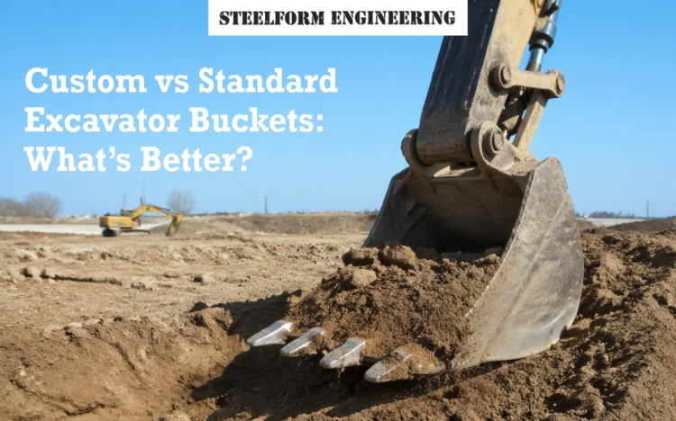

Deciding what attachment you want for your heavy equipment is one of the most important choices you will make, as it will directly impact the way you will operate those machines efficiently and effectively as well as the profitability of your project. For many contractors, the custom vs. standard excavator bucket discussion is an ever-present issue.
A standard bucket may not be able to perform to the same level as a custom bucket depending on the unique demands of a job site; however, standard excavator buckets tend to be readily available due to the high level of their production, which also gives them a low initial purchase price.
In this blog, we will look at the different ways to use a bucket and figure out which one is best for each work.
A standard excavator bucket has a generic design that will allow it to operate in a very general capacity. Typically, a "standard" bucket will be designed to operate efficiently within the typical soil/environmental parameters of loose dirt, sand, and gravel. Since "standard" buckets are mass manufactured, they tend to be available for immediate purchase and have a lower initial purchase price than a custom bucket.
When performing tasks like general civil construction projects (e.g., installation or repair of utilities) or landscaping, a standard bucket can be used in a manner that will provide good, reliable performance in most situations. Standard buckets are also an excellent way to accomplish utility trenching and basic project cleanup. However, as you increase the size of your project with more specialised and demanding tasks, standard equipment will not provide the same level of performance due to the limitations of its design.
The efficiency of your equipment will continue to diminish as the requirements of your project exceed the capabilities of standard equipment. Any wear and tear on your equipment will occur at a much faster rate than it would have if you were using customised equipment.
Having an excavator bucket customised allows excavator operators to have the bucket\'s capacity, shape, and reinforcement made specifically for the conditions on their sites.
If the dirt you’re working with consists of volcanic rock, sticky mud, or large debris, you need a customised solution to ensure your equipment will be able to perform at its highest capacity.
Steelform Engineering provides attachments engineered to handle the most hostile conditions you can encounter. By altering the breakout force, tooth style, and use of wear liners, we can make sure that each pass on the job site will be more efficient than the previous one. Custom excavator buckets are more than just an accessory; they are a strategic asset that can help you save fuel and speed up your work.
It may seem like a standard bucket is cheaper to buy than a custom bucket. It's important to always figure out the total cost of ownership for the whole project. If a standard bucket needs lots of repairs and downtime, or it prolongs daily production time significantly, then it may be more expensive over time than a custom bucket would have been.
While selecting an excavator bucket, an excavator bucket selection guide will highlight that when considering large-scale or heavy-duty projects, custom solutions provide a better return on investment (ROI). This is achieved by reducing the number of fill cycles needed to clear a site, as well as reducing the number of welding repairs needed over time. Making the investment in the proper tool for the job is a signature of good professional working practices that puts value on efficiency, rather than just short-term savings.
If your standard setup no longer meets your needs because of your project requirement, a custom bucket is the way to go. Some examples of situations where you should consider a custom bucket are:
The processes involved in choosing an attachment include balancing the current needs of the project with future needs of the company. A full product selection guide for excavator buckets says that a company should do an audit before buying a new excavator bucket.
If a company performs 80% of their work as routine, a good durable bucket will probably work in most instances. If you are planning to expand your business into more complex industries or heavier-duty applications, you will highly likely need to develop customised equipment for these types of applications to be scalable.
The type of attachment you will need to purchase will depend on operational requirements. For example, the use of a standard bucket will provide flexibility when taking care of minor tasks; however, if you need to maintain maximum production levels in specialised environments, you require a custom bucket for durability and performance.
At Steelform Engineering, we lead the industry by providing guidance and manufacturing solutions through our expert knowledge and experience. We partner with contractors to help them evaluate what they are doing in their operations and deliver superior productivity-enhancing buckets for their applications.
Contact Steelform Engineering today to find out how you can put an end to wasting time and money with inadequate equipment.